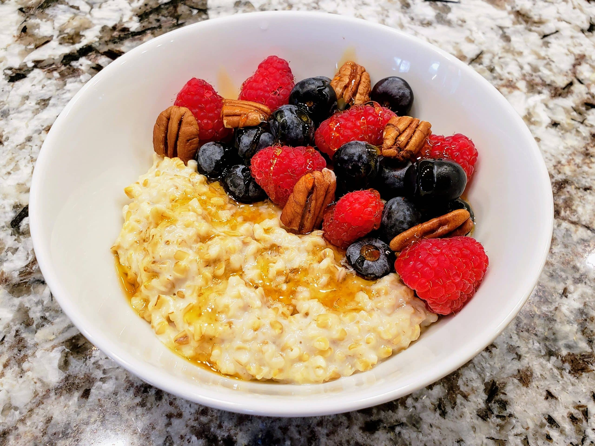

Home
Simple Steelcut Oatmeal

Description
My go-to breakfast during the week that is quick, healthy and satisfying
Ingredients
- 1/3 cup of Steelcut Oats
- 2/3 cup of water
- 1 small or medium banana (Sliced)
- 1/2 cup of fresh rasberries
- 1/2 cup of fresh blackberries
- 2 tbsp of Almond Butter
Steps
- Pour oatmeal into medium microwave safe bowl
- Pour water into bowl
- Place bowl in microwave and heat for 2 minutes on high
- Add almond butter and stir until oatmeal turns slightly brown
- Add and mix fruits
- Enjoy!